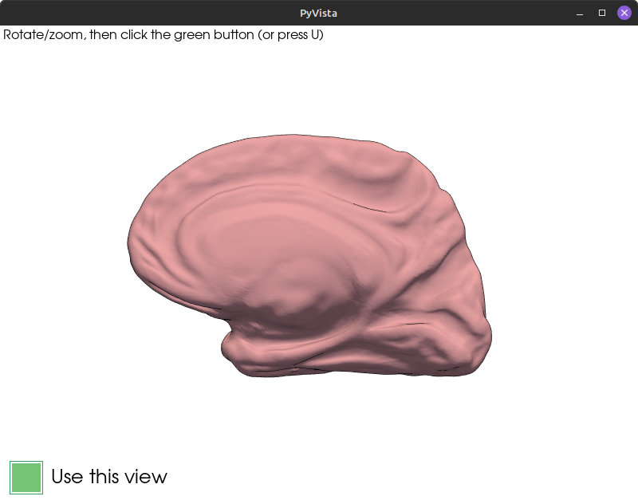
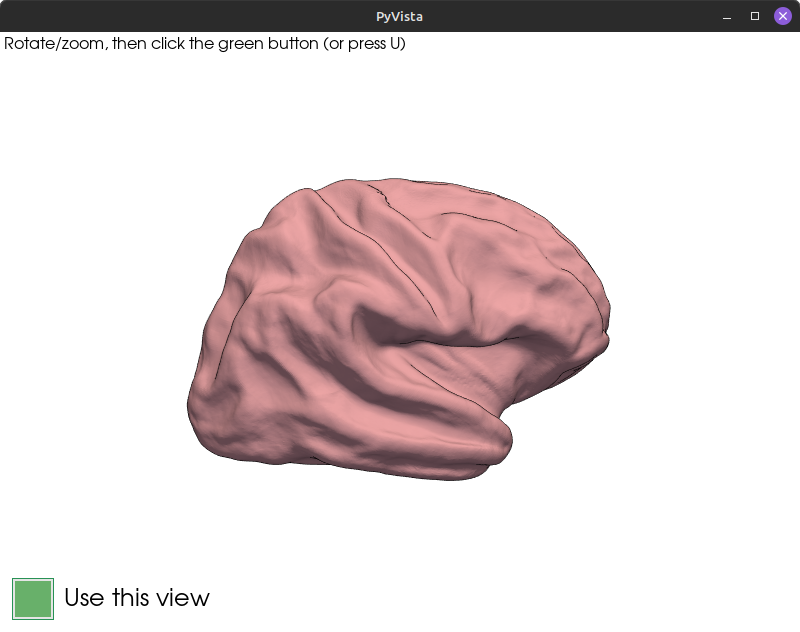
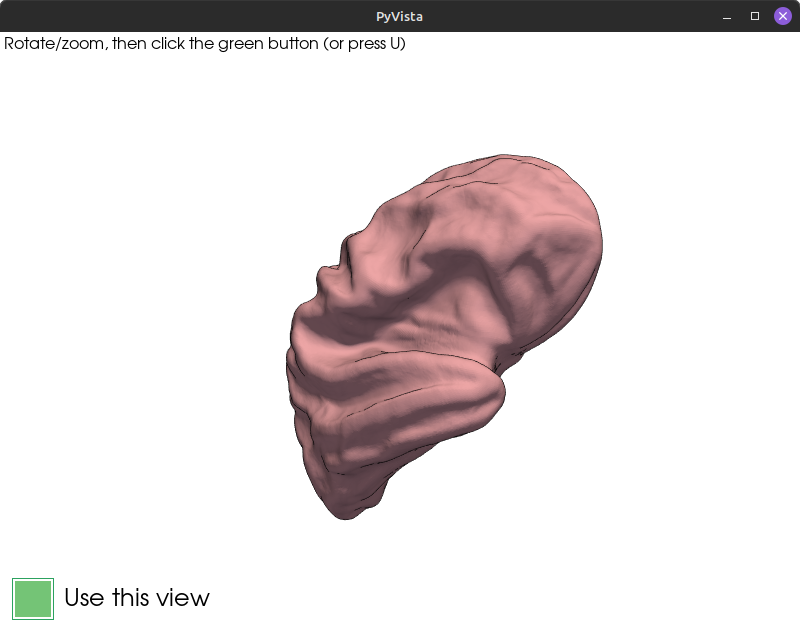
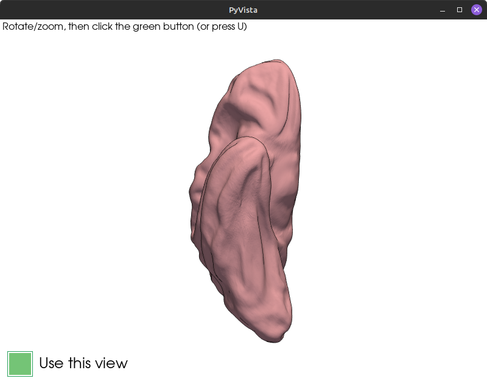
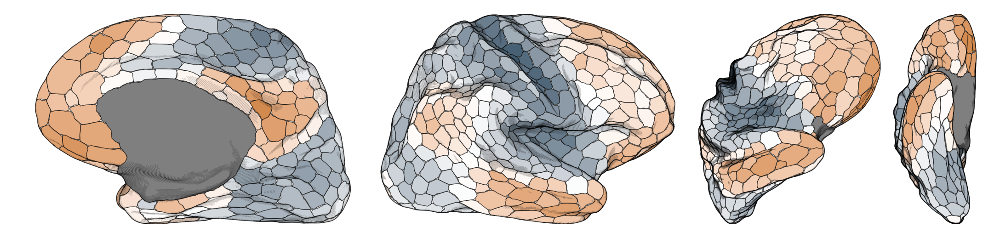
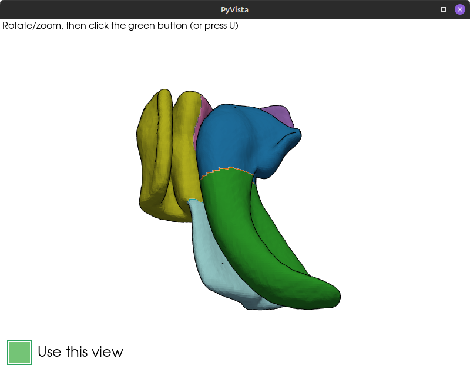
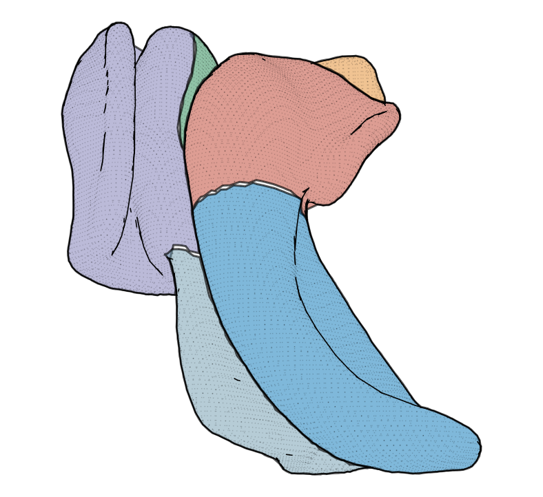
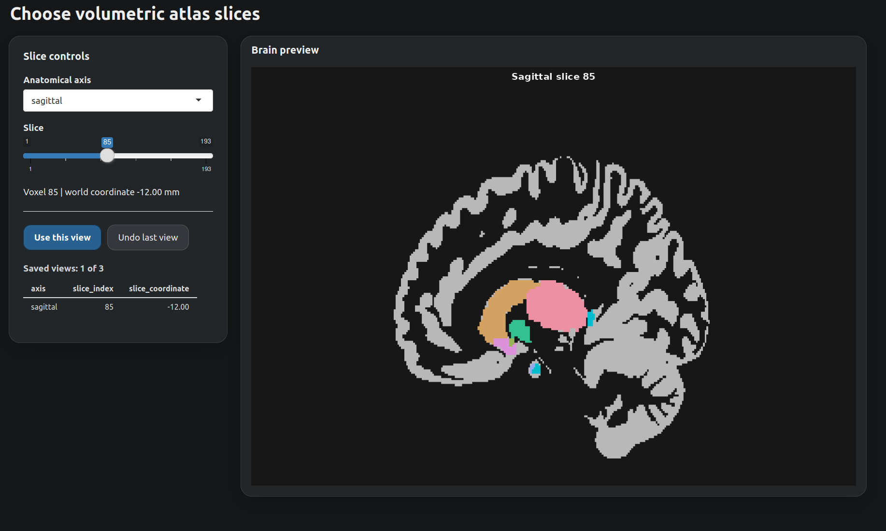
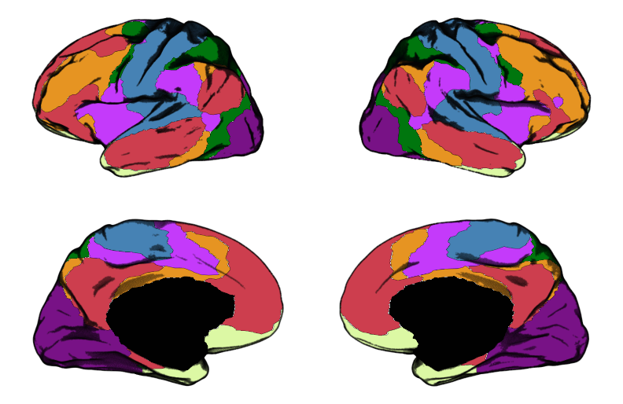

Do you use ggplot to visualize imaging data on brain atlases? Welcome to ggbrat: brain atlases for ggplot2!
There is, of course, already the wonderful and popular ggseg package for this particular purpose, but ggbrat offers something slightly different. While ggseg provides prebuilt atlases and modified geoms, the focus of ggbrat is to provide tools for building the 2D atlases themselves (although it also comes with many prebuilt atlases). ggbrat builds two-dimensional brain atlases that work directly with ggplot2 and sf. It can turn cortical annotations, labelled (subcortical) surface meshes, volumetric NIfTI atlases, and labelled SVG drawings into plot-ready sf geometry, from whatever view angle you want. No more PNG snapshots and outlining; it is all automatic!
The origin of this package stemmed from me wanting to visualize my brain data using ggplot with a bit more cortical texture (I mean the brain looks cool, no?). And since I really don’t like doing things manually, and because the brain is cool from many different angles, I developed an interactive view selector that can derive 3D looking 2D atlases from any camera angle in just a few seconds.
Example surfaces/textures (plotted only using ggplot):

Example of four view angles rendered to 2D:
|
 |
 |
 |
 |

The package supports many atlases and file types. As long as you have a surface with corresponding labels (FreeSurfer, GIFTI, or .vtp meshes), you can kind of build from whatever you want. For example, here is a surface rendering of the medial temporal lobe (shout out to @pyushkevich). The shading and region boundaries will, however, be better the more detailed the mesh is.
|
 |
 |
Furthermore, the package lets you create surface meshes from NIfTI atlases (I’ve only tested this with subcortical atlases as of yet), from which you can then build 2D atlases.
Here is an example of the aseg atlas:

Of course, if you prefer to visualize the subcortex in volume space, that is also possible. The package’s slice selector lets you choose whichever slices you want in your atlas.

There are also presets for both the surface-based view selector and its volumetric counterpart.

Have you drawn your own atlas in Inkscape, or some other vector-based illustration software that we don’t mention by name? No problem! If you’ve set up your drawing properly, you can just import it as a ready-to-go atlas file with the click of a button.

(courtesy of Anika Wuestefeld)
The name of the game
This package is about versatility, but within the limits of ggplot. As brain imagers favoring R (or perhaps ggplot), this is a tradeoff we have to deal with. Since ggplot is inherently a two-dimensional plotting library, and the brain is a three-dimensional object, ggplot will never be able to compete with proper 3D rendering software in terms of getting that sexy 3D look. However, what we lose in sexiness we gain in analytical versatility. As most of you know, ggplot is extremely versatile, especially with the numerous extensions built around it, making data exploration very easy compared to many other libraries. This was the reason that I did not want to wrap functionality around functions already handled by ggplot (and sf). All utilities and functionality that support geom_sf() can be used with ggbrat’s atlases.
To get the “3D look,” ggbrat can retain a density-sampled fraction of the original mesh vertices and plot them as an additional shade layer. That shade, overlays from other atlases, and even animations are still ordinary ggplot layers. See Plotting ggbrat atlases for the full examples.
So, the package separates atlas creation from atlas use. Any ggbrat atlas is just a Simple Features object/collection like any other. While creating these atlases (at least the surface-based ones) requires Python and specifically vtk (trust me, I tried to do everything in R, but sometimes R just says “no”), once an atlas has been built and saved as an RDS file, plotting and sharing it are ordinary R workflows and do not require Python and frankly do not even require this package anymore. You just load the atlas up, join it with your data, and plot it (it does require sf though).
[!NOTE] ggbrat is under active development. The function interface and downloadable resource catalog may change before the first stable release.
Quick start
Install the development version from GitHub:
# install.packages("pak")
pak::pak("jorittmo/ggbrat")Load a premade atlas and plot it:
library(ggbrat)
library(ggplot2)
yeo <- load_atlas("Yeo2011_7Networks_N1000")
ggplot(yeo$atlas) +
geom_sf(aes(fill = color), linewidth = 0.15) +
geom_sf(data = yeo$shade, size = 0.1, alpha = 0.1) +
scale_fill_identity() +
theme_void() 
load_atlas() downloads the atlas when necessary and keeps it in the user-specific ggbrat cache for next time.
For more detail, head over to:
- Plotting ggbrat atlases
- Resources and caching
- Building surface atlases
- Building volumetric atlases
- Building SVG atlases
- Using TemplateFlow
- Function reference
Plotting premade atlases, downloading resources, and using the volumetric and SVG functionality require R only. Surface projection and NIfTI-to-mesh conversion additionally require Python 3.9 or newer. With reticulate >= 1.41, ggbrat declares the required Python packages when those functions are first used. I tried to make everything all R, but after having banged my head against the wall for far too long I gave up.